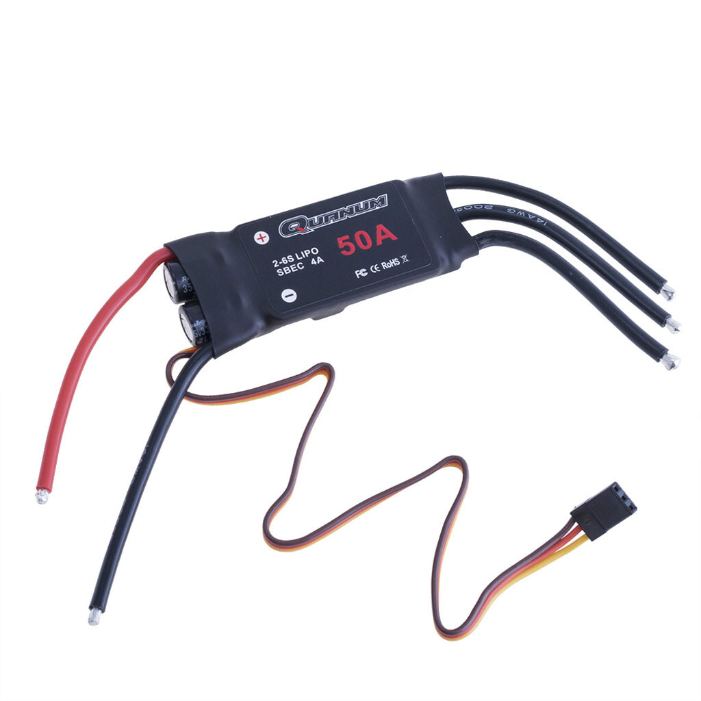
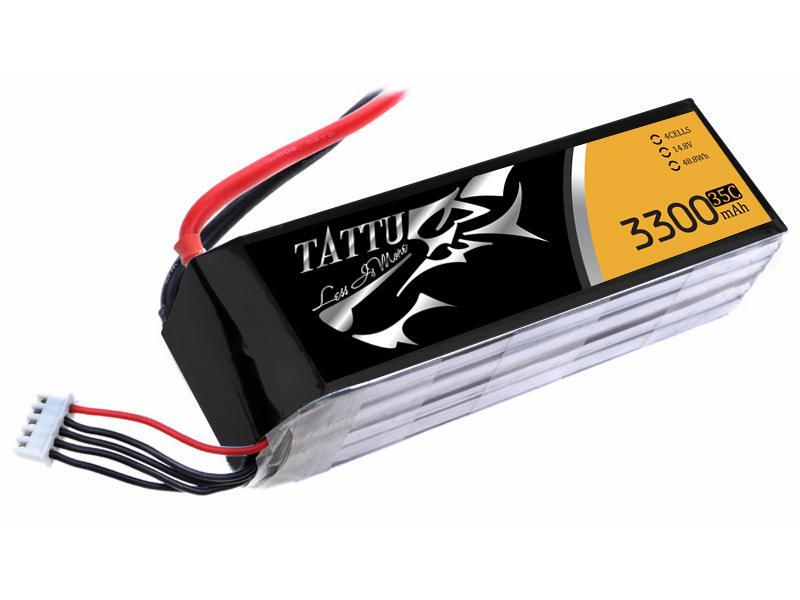

Модель тяги воздушного винта
Как правило, малые ЛА оснащены электрической силовой установкой (СУ), состоящей из бесколлекторного электродвигателя, регулятора оборотов, воздушного винта и элемента питания.
Мотор

Регулятор оборотов

Воздушный винт

Батарея
Для полного описания силовой установки ЛА необходимо рассмотреть все
указанные выше компоненты в совокупности. Для определения
силы тяги, создаваемой винтом, рассморим модель мотора и винта
Модель бесколлекторного двигателя
Любой электромотр характерезуется рядом параметров, которые указываются производителем. Всегда при выборе мотора необходимо руководствоваться документацией на мотор. Если она отсутствует, значит производитель недобросовестный; ни вы не знаете, что покупаете, ни производитель - что производит. Ниже представлен пример такой документации на мотор Sunnysky X2814 Как видно, список обширный, включающий в себя геометрические
массовые и электрические характеристики. Для электрической
модели двигателя нам понадобятся следующие парамеры:
Как видно, список обширный, включающий в себя геометрические
массовые и электрические характеристики. Для электрической
модели двигателя нам понадобятся следующие парамеры:
 Запишем закон Киргофа для контура
\[V_{in} = (i+i_0)R + E_{ind}\]
Запишем закон Киргофа для контура
\[V_{in} = (i+i_0)R + E_{ind}\]